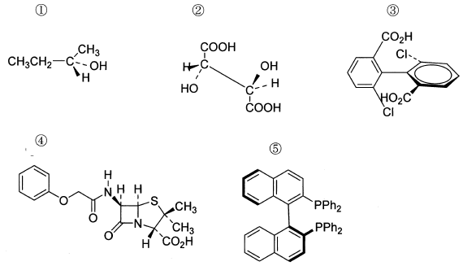

令和元年度 問7 有機化学及び燃料
次の有機化合物のうち、鏡像異性体が存在しないものはどれか。

①
選択肢1
②
選択肢2
③
選択肢3
④
選択肢4
⑤
選択肢5
正答
②
1番は不斉炭素を1つもつ分子であり鏡像異性体が存在する基本的な分子です。
2番は2つの不斉炭素を持ち、それぞれに結合した置換基が同じです。問題文では(S, R)体ですが鏡像異性体である(R, S)体は、上下左右に反転すると全く同じ立体配置になるため鏡像異性体ではありません。このように不斉炭素を持つにも関わらず鏡像異性体を持たない物質をメソ化合物と呼びます。
基本的に、2つの不斉炭素を持つ分子には上記(S, R)体や(R, S)体以外にも、(R, R)体や(S, S)体が存在します。(S, R)と(R, S)、(R, R)と(S, S)のように鏡像関係にあるものをエナンチオマー、(S, R)と(R, R)のように鏡像関係に無いものをジアステレオマーと呼びます。ただし2つの不斉炭素に結合した置換基が同じ場合に限りメソ化合物が存在します。
- エナンチオマー：鏡像関係にあり物性が同じ
- ジアステレオマー：鏡像関係ではないため物性が異なる
3番や5番は、立体障害の関係で単結合の回転が阻害されて鏡像異性体を持つ分子です。このような炭素原子1つではなく結合軸を基に不斉が発生しているため軸不斉と呼ばれ、軸不斉を持つ化合物はアトロプ異性体と呼ばれます。